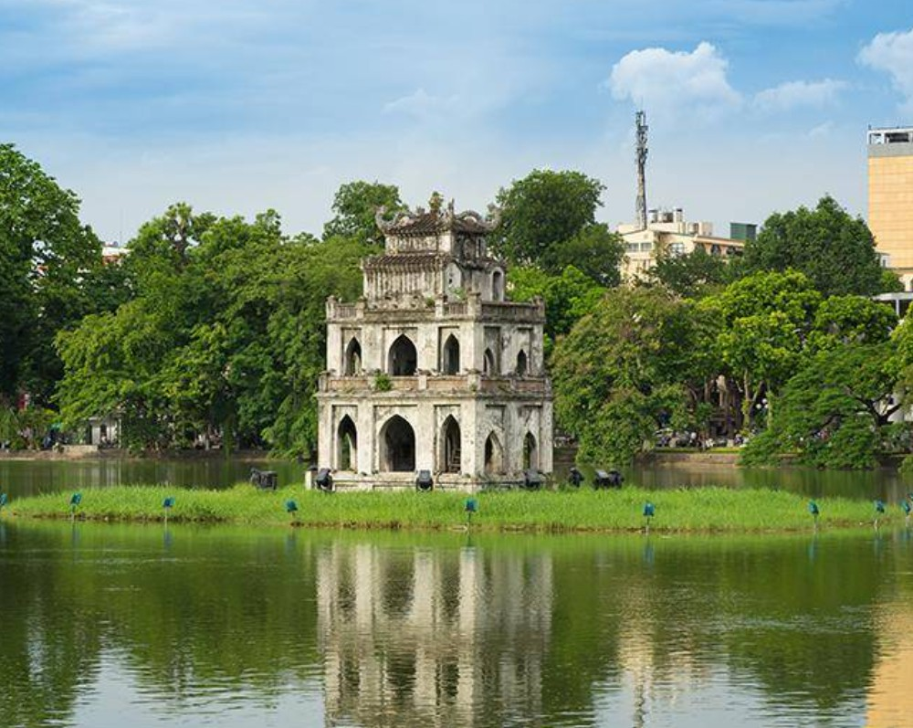
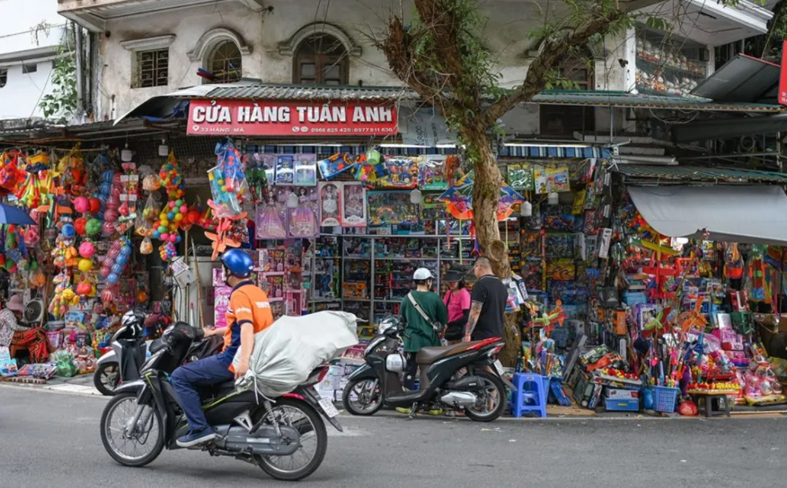
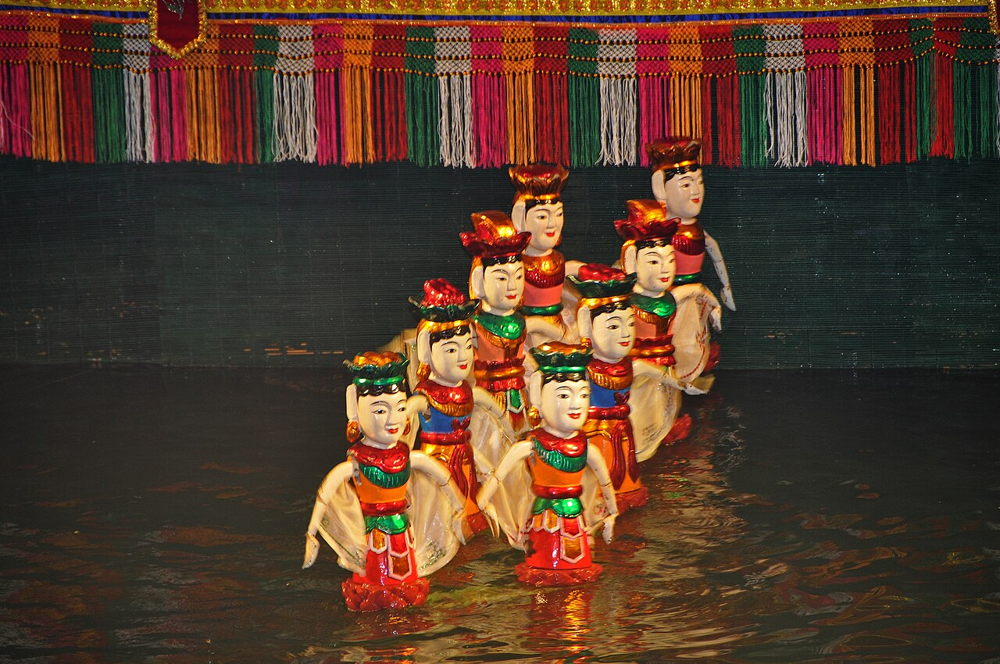

01 還劍湖 Hồ Hoàn Kiếm
位於河內市中心，湖畔是觀察在地生活的一個起點。沿著水邊散步，看看樹影與湖景，也能為接下來的街區探索留點緩衝。
- 推薦理由
- 可以自由調整步行長短，讓喜歡拍照、散步或坐著休息的家人各自找到節奏。
- 家庭旅遊提醒
- 建議選一小段湖岸慢走，不必以繞完整圈為目標；照顧幼童時留意水邊，長輩累了就安排休息。
01 / NORTHERN VIETNAM
位於越南北部、紅河畔的首都。湖邊的樹蔭、古街的店面與傳統表演，讓一家人能從不同角度認識這座城市。
先從還劍湖周邊走起，吃點小吃，再逛進古街。

A CLOSER LOOK
不必一次走遍所有街道。先散步、看看生活，再留一段時間給表演。

位於河內市中心，湖畔是觀察在地生活的一個起點。沿著水邊散步，看看樹影與湖景，也能為接下來的街區探索留點緩衝。

還劍湖以北的古街區，街道與傳統行業的發展相連。觀察店面陳列、街屋與不同商品，比趕著走完每條街更容易記住這裡的生活樣貌。

木偶在水面舞台上演出鄉村生活與民間故事，操偶師在屏幕後控制角色。河內的昇龍水上木偶劇院是認識這項傳統表演的選擇。
以上景點內容更新：2026-11-15。推薦理由及家庭提醒為編輯建議；照片僅供景觀參考，不代表現況。
ONE DAY, YOUR PACE
以下是編輯行程提案，不是固定團體路線；可依天氣、家人體力與實際演出場次調整。
先看湖景，熟悉周邊環境。選擇大家都舒服的步行距離，想休息就停下來。
挑幾條有興趣的街道走走，安排用餐與室內休息，不把整個下午排滿。
確認場次後再決定用餐與觀賞順序；若不想看表演，也可提早回住宿休息。
和家人先聊聊：比較想散步、逛店，還是看表演？每天保留一個可省略的安排，讓行程更有彈性。
BEFORE YOU GO
來源：Vietnam Tourism：Ha Noi。交通方式更新日期：2026-11-15；班次與費用待確認。
以上為行程規劃建議，不代表場館服務或設施保證。
WHERE NEXT?
繼續看看海灣、古鎮與海島，挑一站你喜歡的風景。
內容及圖片授權更新日期：。本頁不提供未經確認的票價與營業時間；出發前請再次確認場次、交通及場館規定。
照片縮小與顯示裁切；CC BY-SA 圖片衍生版本沿用相同授權。
_(53489228584).jpg){kind=link}
_(37781275814).jpg){kind=link}
.jpg){kind=link}